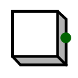

Кнопка
Кнопка
| Библиотека: | Ввод/вывод |
| Введён в: | 2.1.3 |
| Внешний вид: |
 |
Поведение
В нормальном состоянии на выходе 0, но когда пользователь нажимает кнопку с помощью Инструмента «Нажатие», на выходе устанавливается значение 1.
Контакты
Кнопка имеет только один контакт — 1-битный выход, значение которого равно 0 за исключением случая, когда пользователь нажимает кнопку Инструментом «Нажатие» — тогда на выходе устанавливается 1.
Атрибуты
Когда компонент выбран или добавляется на холст, клавиши со стрелками позволяют изменить его атрибут Направление
.
- Направление
- Расположение выходного контакта относительно компонента.
- Цвет
- Цвет, которым отрисовывается кнопка.
- Метка
- Текстовая метка, связанная с компонентом.
- Положение метки
- Положение метки относительно компонента.
- Шрифт метки
- Шрифт, используемый для отрисовки метки.
- Цвет метки
- Цвет, используемый для отрисовки текста метки.
Поведение Инструмента «Нажатие»
При нажатии кнопки мыши на выходе компонента устанавливается 1. После отпускания кнопки мыши значение на выходе возвращается к 0.